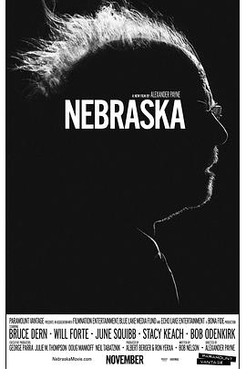

内布拉斯加 / Nebraska
又名：百万奖金梦(港)
配乐不错
作品信息
| 导演 | 亚历山大·佩恩 |
| 编剧 | 鲍勃·尼尔森 |
| 主演 | 布鲁斯·邓恩 / 威尔·福特 / 朱恩·斯奎布 / 鲍勃·奥登科克 / 斯泰西·基齐 / 玛丽·路易丝·威尔逊 / 兰斯·霍华德 / 蒂姆·德里斯科尔 / 戴文·雷特瑞 / 安吉拉·迈克伊万 / 格伦多拉·斯蒂特 / 伊丽莎白·穆尔 / 凯文·孔克尔 / 丹尼斯·麦科伊格 / 罗纳德·沃斯塔 / 米茜·多蒂 |
| 类型 | 剧情 / 喜剧 / 家庭 |
| 制片国家/地区 | 美国 |
| 语言 | 英语 / 西班牙语 |
| 上映日期 | 2013-05-23(戛纳电影节) / 2013-11-22(美国) |
| 片长 | 115分钟 / 110分钟(戛纳电影节) |
| IMDb | tt1821549 |
最后一次看到是 2026-08-12T21:13:14+08:00 · 豆瓣原页